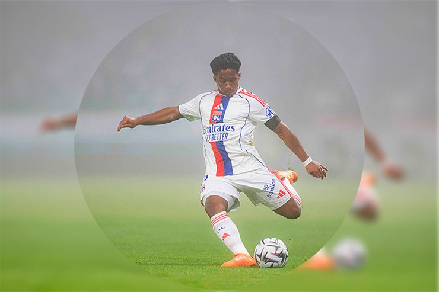
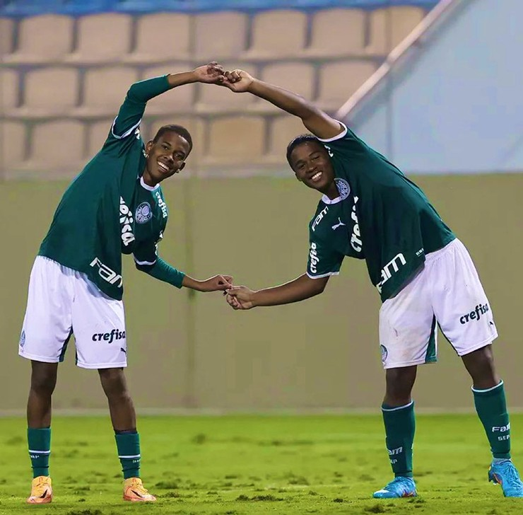
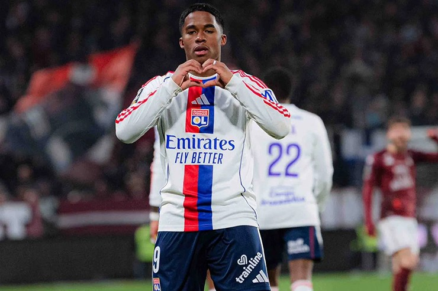
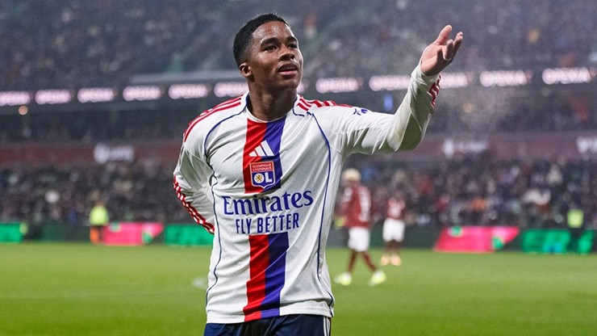

Ban lãnh đạo Chelsea đang chuẩn bị gửi một lời đề nghị chính thức trị giá 80 triệu euro đến Real Madrid nhằm chiêu mộ tiền đạo trẻ Endrick. Động thái quyết liệt này đánh dấu sự thay đổi chiến lược rõ rệt của "The Blues" khi họ quyết định rút lui khỏi cuộc đua giành chữ ký của Julian Alvarez.
Việc phải cạnh tranh quá khốc liệt với những gã khổng lồ như Arsenal, Barcelona và PSG khiến thương vụ tiền đạo người Argentina trở nên đắt đỏ và rủi ro. Thay vào đó, giới chủ tại Stamford Bridge nhận định Endrick là phương án khả thi, kinh tế và phù hợp hơn nhiều với tầm nhìn dài hạn của câu lạc bộ, bất chấp việc cầu thủ này vẫn còn hợp đồng với Real Madrid đến tận năm 2030.

Chelsea "quay xe" thương vụ Julian Alvarez và chuyển hướng sang sao trẻ Endrick của Real MadridDưới triều đại của tân HLV Liam Rosenior, Chelsea đang khao khát xây dựng một hàng công trẻ trung và giàu tốc độ. Động lực lớn nhất thúc đẩy thương vụ này chính là sự hòa nhập siêu tốc của Estevao Willian. Kể từ khi cập bến London vào mùa hè năm ngoái, Estevao đã tỏa sáng rực rỡ, trở thành niềm cảm hứng mới tại Stamford Bridge.
Ban lãnh đạo Chelsea tin rằng công thức chiến thắng này sẽ được nhân đôi nếu họ đưa được Endrick về đá cặp cùng Estevao. Viễn cảnh tái hợp hai viên ngọc quý sáng giá nhất của bóng đá Brazil, những người từng là đối tác ăn ý ở cấp độ đội tuyển, chính là quân bài tẩy quan trọng để Chelsea thuyết phục Endrick rời bỏ Tây Ban Nha để đến với xứ sở sương mù.

Estevao và Endrick từng là đối tác ăn ý ở cấp độ đội tuyển và CLB PalmeirasHiện tại, Endrick đang thi đấu dưới dạng cho mượn tại Olympique Lyon và ngay lập tức tạo ra những tác động khủng khiếp lên giải đấu nước Pháp. Chỉ sau ba lần ra sân ít ỏi, chân sút sinh năm 2006 đã ghi tới bốn bàn thắng và đóng góp một pha kiến tạo, những con số thống kê biết nói phản ánh nền tảng thể lực sung mãn và kỹ năng săn bàn thượng thừa.
Điều trớ trêu là việc Endrick phải sang Pháp "du học" vốn là quyết định của cựu HLV Xabi Alonso, người vừa bị sa thải cách đây ít lâu sau thất bại tại Siêu cúp Tây Ban Nha. Chính sự tỏa sáng rực rỡ của Endrick tại Lyon đối lập hoàn toàn với sự bất ổn tại Bernabeu đã khiến Chelsea càng thêm quyết tâm sở hữu bằng được chữ ký của anh.

Endrick hồi sinh rực rỡ ở Lyon sau chuỗi ngày mài đũng quần trên ghế dự bị ở Real MadridChelsea muốn tận dụng tình hình hỗn loạn trên băng ghế huấn luyện của Real Madrid để "câu cá ở vùng nước đục". Mức giá 80 triệu euro cho một cầu thủ đang bị đem cho mượn và không có chỗ đứng trong đội hình chính là con số cực kỳ hấp dẫn mà Real Madrid khó lòng từ chối. Về phía Endrick, dù còn yêu mến Madrid nhưng khát khao được ra sân thi đấu thường xuyên và vai trò kép chính tại một dự án đầy tham vọng như Chelsea là điều khó cưỡng lại.
Sự kết hợp giữa sức mạnh của Endrick và kỹ thuật của Estevao được kỳ vọng sẽ biến Chelsea thành một thế lực tấn công đáng sợ trong tương lai gần, và "The Blues" đang muốn chốt hạ thương vụ này nhanh nhất có thể.

80 triệu euro là 1 con số ấn tượng đủ để Real phải suy nghĩ về 1 cầu thủ đang cho mượn.